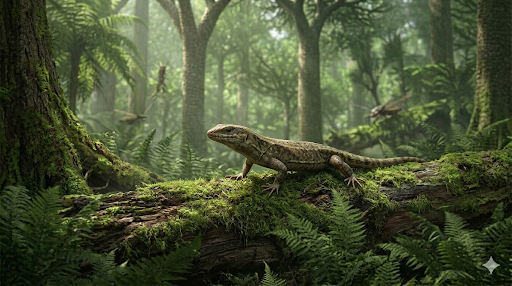

הילונומוס
The Forest Dweller: Hylonomus lyelli

תיק מחקר: נתונים אבולוציוניים
תקופת פעילות
לפני כ-312 מיליון שנה
תור הקרבון המאוחר (פנסילבנית)
מסה ומשקל
גרמים בודדים
לטאה קטנה בעולם של ענקים
ממדים (אורך)
כ-20 סנטימטרים
כולל זנב ארוך ודק
מיקום גיאוגרפי
צוקי ג'וגינס, קנדה
אזור בפרובינציית נובה סקוטיה שבו נחשפים צוקים עתיקים על ידי גאות ושפל קיצוניים.
סיווג טקסונומי קריטי
הזוחל (Reptile) הראשון הידוע למדע
בעל השפיר (Amniote) הקדום ביותר. החולייתן הראשון בהיסטוריה שהיה מותאם לחלוטין לחיים על היבשה ללא תלות במים.
01 // ניתוח אטימולוגי נרחב
| החלק בשם | שפת מקור | פירוש ומשמעות היסטורית |
|---|---|---|
| Hylo- | יוונית (ὕλη) | עץ / יער התייחסות ישירה למקום שבו הוא חי וגם לקבר העץ (הגזע החלול) שבו התגלה. |
| -nomus | יוונית (νομός) | שוכן / רועה הפירוש הוא "השוכן בתוך". הלחם של השם הפרטי יוצר את המשמעות **"שוכן היערות"**. |
| lyelli | לטיניזציה | לזכרו של צ'ארלס לייל שם שהוענק על ידי ג'ון ויליאם דוסון (1860) כהוקרה לשותפו לתגלית, סר צ'ארלס לייל – הגיאולוג האגדי ומורו של צ'ארלס דרווין. |
02 // תולדות הגילוי: מלכודות הגזעים בג'וגינס
הסיבה למשלחת של לייל ודוסון
ב-1852, סר צ'ארלס לייל הגיע לקנדה כדי לחקור את תצורות הפחם יחד עם עמיתו ג'ון ויליאם דוסון. הם הגיעו ל**צוקי ג'וגינס**, שם גאות ושפל אדירים שוחקים את הסלעים וחושפים את העבר. הם הבחינו במאובנים של עצי ליקופודים שעמדו **זקופים** באבן.
מלכודת המוות הקדומה
החוקרים הבינו שהעצים הללו מתו בהצפות, הליבה הרכה שלהם נרקבה, והם הפכו ל**צינורות עץ חלולים** ועמוקים שניצבו בבוץ. ההילונומוס הזעיר נפל פנימה כמו לתוך בור מלכודת, לא יכל לטפס החוצה – וגווע שם ברעב. הגזע שהתמלא בבוץ שימר את עצמותיו בתוכו.
מצב הממצאים: שלמות מוחלטת בתוך העץ
- כמה פרטים נמצאו? מאז המאה ה-19 ועד היום, נמצאו שרידים של **עשרות פרטים שונים** של הילונומוס בתוך הגזעים החלולים בג'וגינס.
- האם נמצא שלד שלם? **כן, בהחלט.** בניגוד לחיות ביצה רבות, מלכודת העץ סיפקה תנאי שימור הרמטיים. כשהחיה נלכדה ומתה, עצמותיה לא התפזרו בזרמי מים ולא נאכלו על ידי טורפים. כתוצאה מכך נמצאו **שלדים שלמים ומחוברים לחלוטין (Articulated)**, מקופלים בקרקעית הגזע, כולל חוליות הזנב ואצבעות הרגליים.
אבולוציה: המצאת ביצת השפיר
ההישג הגדול ביותר של ההילונומוס אינו בשלד שלו, אלא בדרך שבה התרבה. הוא ניתק את השלשלאות שקשרו את בעלי החיים למים.
לשאת את הבריכה ליבשה
עד אליו, דו-חיים היו חייבים להטיל ביצים רכות במים כדי שלא יתייבשו. ההילונומוס המציא את **ביצת השפיר (Amniotic egg)**: ביצה בעלת קרומים פנימיים וקליפה שאטמה את המים בפנים אך איפשרה לחמצן להיכנס. בזכות ה"טכנולוגיה" הזו, הוא יכל לנדוד הרחק מהביצות.
חידת הביצים שלא נמצאו
למרות החשיבות העצומה שלה, **מעולם לא נמצאה ביצה מאובנת של הילונומוס.**
למה לא מצאו? בניגוד לדינוזאורים מאוחרים, לביצים של הזוחלים הראשונים הייתה קליפה **גלדנית (Leathery, דמוית עור)**, כמו לנחשים וצבים. קליפה כזו נרקבת מהר ואינה הופכת לאבן. עם זאת, המדע בטוח בהמצאתה בשל האנטומיה ההשוואתית, האגן שלו, והיותו אב קדמון ישיר לשושלת שאינה יכולה לעבור שלב מימי (כראשן).
03 // אקולוגיה וגורל השושלת
ביומכניקה ותזונה
בניגוד לדו-חיים כבדים, להילונומוס היו מפרקי קרסול שאפשרו ריצה בפרצי מהירות (Sprinting). עורו כוסה קשקשים שמנעו התייבשות. גולגולתו הייתה ללא פתחים (Anapsid) ושיניו המחודדות היו מושלמות ללעיסת החרקים ועקרבי הקרבון הקדומים.
מקפצת ההכחדה (CRC)
כשאירוע ההכחדה "קריסת יערות הגשם של הקרבון" התרחש והביצות התייבשו, ענקי תור הקרבון מתו. אך עבור ההילונומוס, שיכל לשאת את הביצים שלו ולחיות בעור מוגן-התייבשות, הקריסה הייתה ההזדמנות הגדולה. הוא שרד, כבש את היבשת, והפך לאבי כל הזוחלים, הדינוזאורים והעופות.